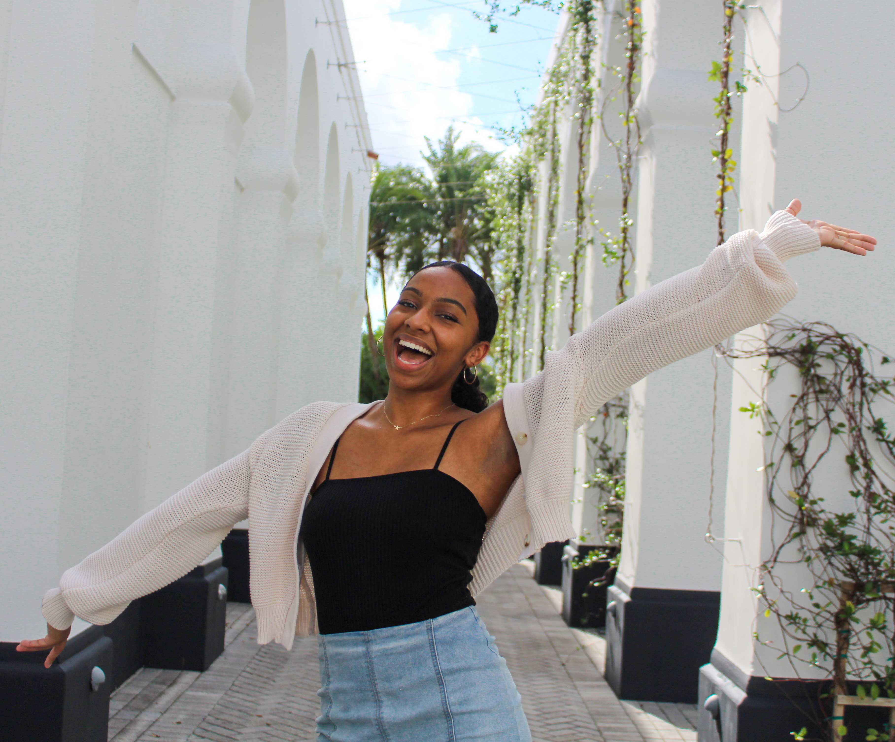

About

Hello, everyone! My name is Kailyn Tyler. I was born and raised in Nashville, Tennessee and I am currently a sophmore at the University of Miami. I'm majoring in Media Management and Psychology while minoring in Spanish and Business Entrepreneurship.
I've always had a love of photography and the way it can express emotions without any words. I started taking photos at an early age and have now mastered it enough to turn it into a side hobby. On my website, you'll find a portfolio of my favorite shots from several photoshoots I've done. I do these shoots for free soley because I love the art of photography. I hope you enjoy looking at the photos as much as I did capturing them.